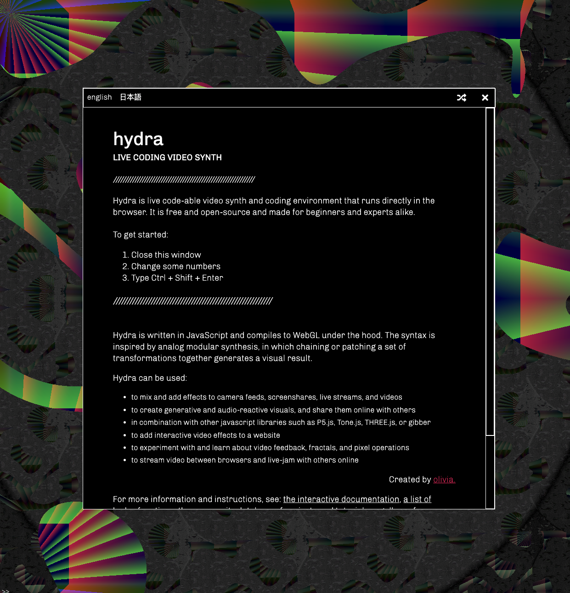

Livecoding visual patterns with Hydra
Had quite a lot of fun livecoding visual patterns with Hydra
Hydra is live code-able video synth and coding environment that runs directly in the browser. It is free and open-source and made for beginners and experts alike.

Reusable snippets
One of the coolest aspects of Hydra is that is is self-contained and browser based.
A program can be easily shared, either as code or via a URL. Eg try this link - which renders the following snippet:
// ee_5 . FUGITIVE GEOMETRY VHS . audioreactive shapes and gradients
// e_e // @eerie_ear
//
s = () => shape(7.284).scrollX([-0.5, -0.2, 0.3, -0.1, -0.062].smooth(0.139).fast(0.049)).scrollY([0.25, -0.2, 0.3, -0.095, 0.2].smooth(0.453).fast(0.15));
//
solid().add(gradient(3, 0.05).rotate(0.05, -0.2).posterize(0.56).contrast(0.016), [1, 0.541, 1, 0.5, 0.181, 0.6].smooth(0.9)).add(s()).mult(s().scale(0.8).scrollX(0.01).scrollY(-0.01).rotate(0.303, 0.06).add(gradient(4.573).contrast(0.008), [0.684, 0.118, 1, 0.43].smooth(1.496), 0.5).mult(src(o0).scale(0.142), () => a.fft[0] * 4.226)).diff(s().modulate(shape(644.351)).scale([1.7, 1.2].smooth(0.392).fast(0.05))).add(gradient(2).invert(), () => a.fft[2]).mult(gradient(() => a.fft[3] * 8)).blend(src(o0, () => a.fft[1] * 40)).add(voronoi(() => a.fft[1], () => a.fft[3], () => a.fft[0]).thresh(0.7).posterize(0.419, 4).luma(0.9).scrollY(1, () => a.fft[0] / 30).colorama(0.369).thresh(() => a.fft[1]).scale(() => a.fft[3] * 2), () => a.fft[0] / 2).out();
//
speed = 1;

Livecoding
Snippets can be modified / composed on the fly.
There is also a handy 'make random change button' that identifies parameters in the code and changes them automatically.
With we had something that easy to use yet powerful for musical livecoding!

A couple nice examples
// Sumet
// by Rangga Purnama Aji
// https://ranggapurnamaaji1.wixsite.com/portfolio
osc(0.5,1.25).mult(shape(1,0.09).rotate(1.5))
.diff(gradient())
.add(shape(2,2).blend(gradient(1)))
.modulate(noise()
.modulate(noise().scrollY(1,0.0625)))
.blend(o0)
.color(0.2,-0.1,-0.5)
.out()
// Puertas II
// por Celeste Betancur
// https://github.com/essteban
osc(4.226, 0.122, 1).kaleid().mask(shape(4, 0.523, 1.91)).modulateRotate(shape(4, 0.1, 1)).modulateRotate(shape(1.428, 0.1, 0.633)).modulateRotate(shape(5.023, 0.143, 1.001)).scale(0.3).add(shape(4, 0.062, 0.071).color(0.433, 1, 1, 0.5)).rotate(() => time).out();
Cite this blog post:
Comments via Github:
See also:
2021
2020
2017
paper Data integration and disintegration: Managing Springer Nature SciGraph with SHACL and OWL
Industry Track, International Semantic Web Conference (ISWC-17), Vienna, Austria, Oct 2017.
paper Fitting Personal Interpretation with the Semantic Web: lessons learned from Pliny
Digital Humanities Quarterly, Jan 2017. Volume 11 Number 1
2015
2013
paper Fitting Personal Interpretations with the Semantic Web
Digital Humanities 2013, University of Nebraska–Lincoln, Jul 2013.
2012
Digital Humanities 2012, Hamburg, Germany, Jul 2012.
2011
2010
2009
2007
paper PhiloSURFical: browse Wittgensteinʼs Tractatus with the Semantic Web
Wittgenstein and the Philosophy of Information - Proceedings of the 30th International Ludwig Wittgenstein Symposium, Kirchberg, Austria, Aug 2007. pp. 319-335